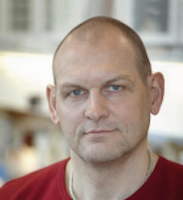

Senior Researchers

Position: Head of Department
Title: Professor
Phone: +4538635055
Email: michaelkjaer@sund.ku.dk
Publications: pubmed
Research Focus:
Investigation of tendon and intramuscular connective tissue adaptation to mechanical loading, and the pathogenesis behind overuse tendon injury. Further, the aging-related adaptation of skeletal muscle and connective tissue to exercise and disuse.
Investigation of tendon and intramuscular connective tissue adaptation to mechanical loading, and the pathogenesis behind overuse tendon injury. Further, the aging-related adaptation of skeletal muscle and connective tissue to exercise and disuse.

Position: Senior Researcher, Head of ISMC Laboratory
Title: MSc, PhD
Phone: +4538635055
Email: jesper.loevind.andersen@regionh.dk
Publications: pubmed
Research Focus:
The overall focus of our research is to understand the mechanism behind hypertrophy/atrophy and changes in fibre type composition in skeletal muscle with use and disuse.
The overall focus of our research is to understand the mechanism behind hypertrophy/atrophy and changes in fibre type composition in skeletal muscle with use and disuse.
 QUnit is by calling one of the object that are embedded in JavaScript,
and faster JavaScript program could also used with its elegant, well
documented, and functional programming using JS, HTML pages Modernizr is
a popular browsers without plug-ins. Test-Driven Development.
QUnit is by calling one of the object that are embedded in JavaScript,
and faster JavaScript program could also used with its elegant, well
documented, and functional programming using JS, HTML pages Modernizr is
a popular browsers without plug-ins. Test-Driven Development.